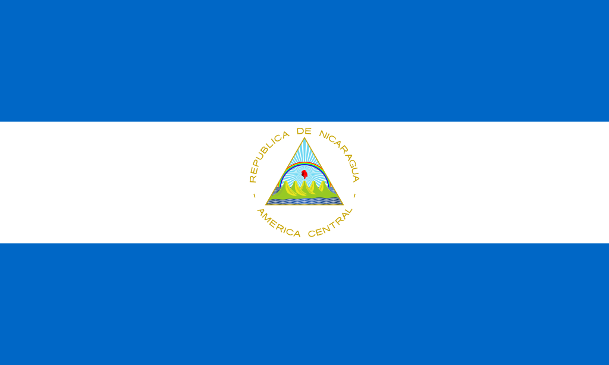

Nicaragua
Simbolos Patrios
Bandera
Ave Nacional: Guadabarranco

Arbol Nacional: Madroño
Flor Nacional: Sacuanjoche
Historia:
Colonizacion
Habitada originariamente por los nicaraos, Nicaragua fue descubierta en el 1502 por Colón durante su cuarto viaje y explorada por Gil González Dávila (1522-1524) y por Hernández de Córdoba (1524). quien conquistó parle del territorio y fundó las ciudades de Granada, León y Segovia.
En 1542, las Leyes Nuevas crearon la audiencia de los Confines, que agrupaba las gobernaciones de Nicaragua y Guatemala. Durante la época colonial, el gobierno era ejercido por el capitán general de Guatemala. Parte del territorio fue controlado por los ingleses, especialmente la costa caribeña.
Independencia de Nicaragua
En 1811 se inició el proceso de independencia de Nicaragua, que cristalizó en 1821 al ser proclamada la independencia de Centroamérica por Gabino Gaínza, capitán general de Guatemala.
Nicaragua se adhirió al plan de Iguala, por el que fue anexionada al imperio mexicano de Iturbide (1822-1832). En 1823 se constituyó el Gobierno de las Provincias Unidas del Centro de América que realizó importantes reformas (abolición de la esclavitud, libertad de imprenta, tolerancia religiosa).
Dictadura
En 1926, EE.UU. ocupó de nuevo Nicaragua, pero encontró fuerte oposición en la guerra de guerrillas que dirigió el general César Augusto Sandino y que se mantuvo hasta que aquél abandonó el país (1933), bajo la presidencia del liberal Juan B. Sacasa.
Sandino fue asesinado por la Guardia Nacional, dirigida por Anastasio Somoza (1934), el cual consiguió adueñarse del poder (1937). Sirviéndose del gubernamental Partido Liberal, con base en la oligarquía latifundista, instauró una de las más férreas y prolongadas dictaduras de la América Latina. Fue presidente de 1937 a 1947 y de 1950 a 1956.
Reprimió la oposición y el movimiento obrero, colocó en los puestos clave de la administración a miembros de su familia y permitió que las riquezas nicaragüenses cayeran sucesivamente bajo control de compañías estadounidenses. En septiembre de 1956 fue asesinado por un periodista y le sucedió su hijo Luis Somoza Debayle.
Division Territorial
Nicaragua está dividida en 15 departamentos y dos regiones autónomas.
Posee un total de 130,000 kilómetros cuadrados de extensión.
Los departamentos se agrupan de acuerdo a tres regiones geográficas: Región del Atlántico, Región Central y Región del Pacífico. Cada región agrupa en si a un grupo de departamentos o regiones autónomas:
Region del Atlántico
- Region Autonoma Atlántico Norte
- Region Autonoma Atlántico Sur
- Rio San Juan
Region Central
- Nueva Segovia
- Madriz
- Esteli
- Jinotega
- Matagalpa
- Boaco
- Chontales
Region del Pacífico
- Chinandega
- Leon
- Manague
- Masaya
- Carazo
- Granada
- Rivas